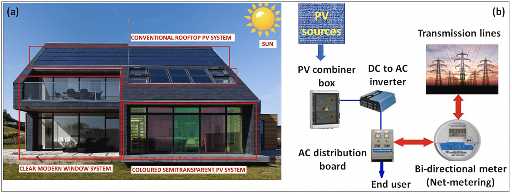
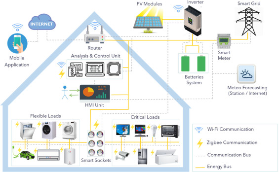
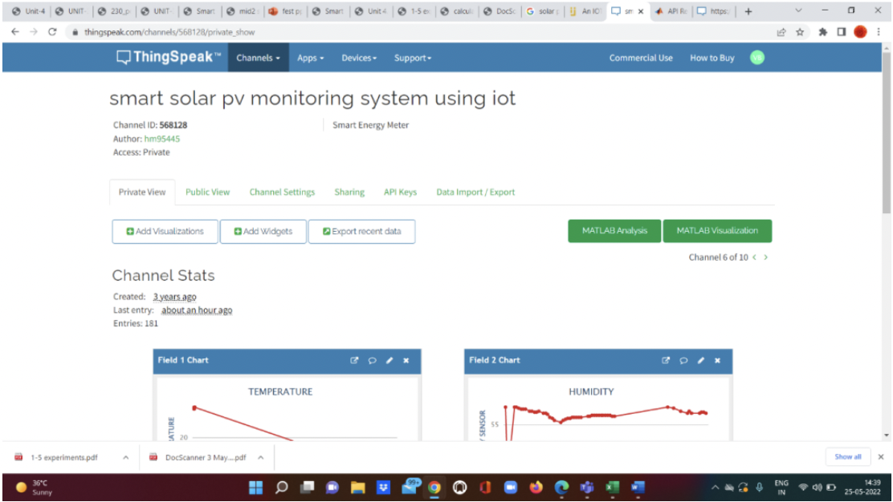
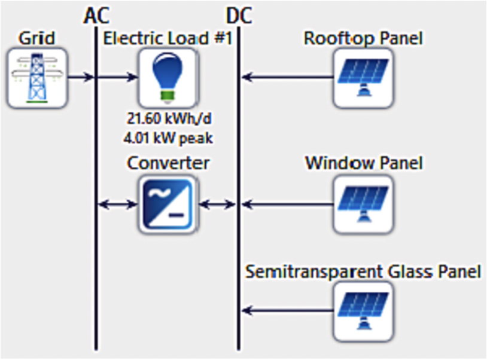
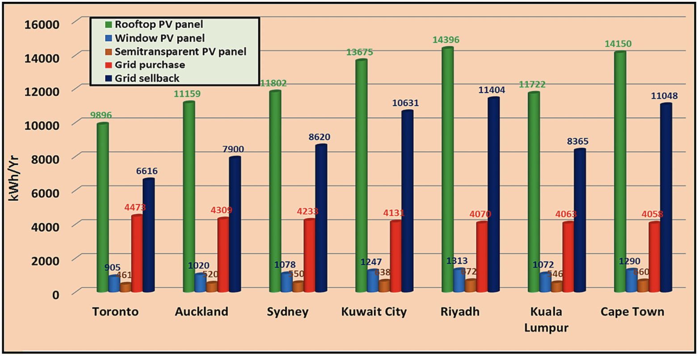

Machine Learning-Enhanced All-PV Blended Energy Systems
Overview
This project investigates a full-surface photovoltaic building design that incorporates rooftop, vertical façade, and semitransparent BIPV modules, enhanced with machine learning for optimal energy yield prediction, intelligent sizing, and real-time monitoring. The system is tailored for energy-positive and low-carbon buildings in urban contexts.
Problem Statement
Building-integrated photovoltaics (BIPV) have immense potential but are underutilized due to complexity in modeling and integration. Existing PV systems often ignore vertical or transparent surfaces, limiting total solar capture. Our research proposes a blended PV model with intelligent control to utilize the full envelope of the building.
Proposed System Architecture
The architecture includes three types of PV integration: conventional rooftop panels, vertical wall-mounted PV, and semitransparent window-integrated PV. The energy generation is managed through a hybrid DC/AC inverter setup supporting bi-directional metering.
Machine Learning Framework
The prediction model uses supervised regression (SVR, RF) trained on irradiance, orientation, and time-of-day data to forecast hourly generation. HOMER Pro simulations complement the ML models for optimal component sizing and layout planning.
IoT-Based Real-Time Monitoring
The PV system is integrated with an IoT framework using ThingSpeak for data visualization. Voltage, current, temperature, and irradiance are recorded in real-time to aid predictive maintenance and performance validation.
Electrical Layout & Grid Connection
The proposed electrical layout uses smart inverters, load balancers, and hybrid grid-interactive design. Both DC and AC buses are managed through energy management controllers.
Performance Comparison Across Cities
The simulation was performed for multiple cities across varied climate zones. Results indicate that the blended PV model outperforms single-surface PV systems by up to 28% in annual yield while enhancing daylight penetration indoors via semitransparent layers.
Analysis: The energy yield advantage of blended PV was most significant in cities with high vertical irradiance such as Los Angeles and Kuala Lumpur. Locations with less horizontal roof area benefited more from vertical PV integration. Seasonal performance showed stability even during winter, confirming system adaptability. ML-based predictions aligned closely with simulation outputs, yielding a mean absolute error below 7% across the dataset.
Key Highlights
- Achieved 78% energy self-sufficiency in optimized deployments
- 30% reduced carbon footprint across modeled regions
- Enhanced facade usability with transparent PV glass
- Live predictive analytics through cloud-connected dashboard
Conclusion
This research introduces a scalable all-PV envelope for buildings that leverages AI, simulation, and IoT technologies. The proposed system is adaptable to various urban contexts and supports zero-energy building targets.
Publication
Title: Machine learning-enhanced all-photovoltaic blended systems for energy-efficient sustainable buildings
Journal: Cleaner Energy Systems, Elsevier
DOI: 10.1016/j.cles.2024.100180
Authors: Mostofa, K. Z., Islam, M. A., & others (2024)